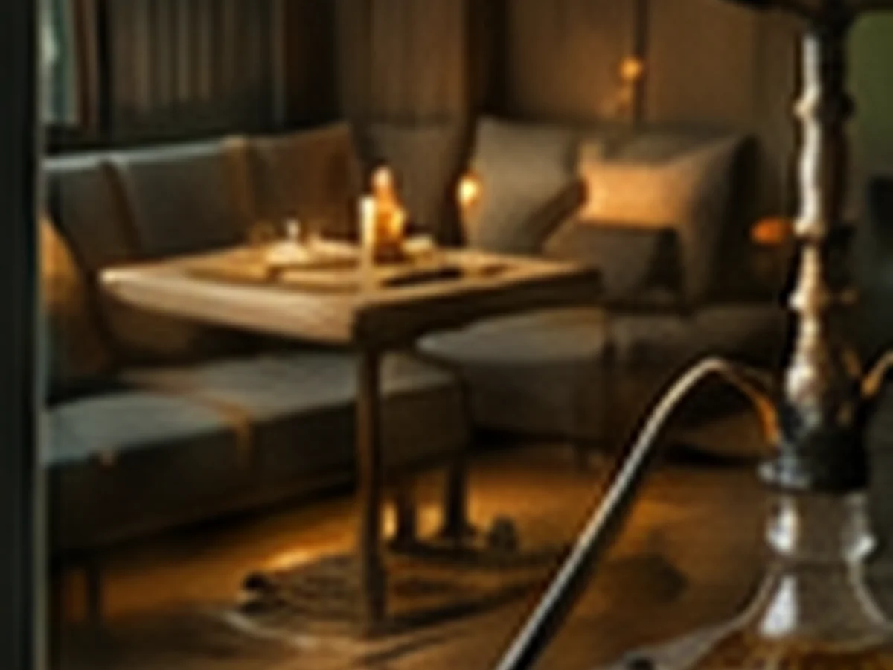

Первое знакомство
Один или два чая, рассказ о способах заваривания и спокойная практика с мастером.
от 1 800 ₽за церемонию
Чайная культура в центре Челябинска
Китайский чай, камерные пространства и события для тех, кому хочется замедлиться и провести вечер со вкусом.
Сценарии визита
Можно познакомиться с чайной культурой впервые, провести время вдвоём, собрать друзей или прийти на тематическое событие.
Мастер подберёт чай и спокойно объяснит процесс без сложных терминов.
→02Камерный формат для свидания, подарка или неспешной встречи.
→03Несколько чаёв и пространство для компании до восьми гостей.
→04Уединённый вечер, встреча или небольшой праздник.
→05Музыка, английский клуб, дегустации и мастер-классы.
→06Готовый повод провести время вместе.
→Чайные церемонии
Продолжительность и стоимость указаны заранее. Итог зависит от выбранного пространства, чая и дополнительных пожеланий.
Один или два чая, рассказ о способах заваривания и спокойная практика с мастером.

Приватный стол, два чая на выбор и время, которое не нужно делить с шумным залом.

Подбор нескольких чаёв, один ритм церемонии и достаточно пространства для разговора.
Впервые на церемонии
Достаточно выбрать настроение: бодрее, спокойнее, мягче или насыщеннее. Остальное мастер подскажет на месте.
Расскажите, что любите в напитках, — предложим несколько вариантов.
Покажем посуду, проливы и правила ровно настолько, насколько вам интересно.
Церемония не обязана быть лекцией: можно просто пить чай и отдыхать.
Пространства
Выберите открытый чайный зал, камерную VIP-комнату или второй этаж для более продолжительного вечера.
Для свиданий, переговоров и небольших праздников. Бронирование от двух часов.
Посмотреть комнату
Более свободный формат для компании, кальяна и долгого вечера.
Посмотреть пространство
Сливочный, фруктовый, мягкий и спокойный вкус.

Хвойный, медовый, лёгкий и медитативный.

Фруктовое пюре, свежие травы и лёд.
Афиша
Количество мест ограничено, поэтому на вечерние события лучше записываться заранее.
Камерный живой звук, два чайных сета и свободное общение после программы.
ПодробнееРазговорная практика за общим чайным столом.
ПодробнееТемпература воды, посуда, пропорции и несколько понятных способов заваривания.
ПодробнееОтзывы гостей
Гости особенно отмечают заботу, гостеприимство и домашние напитки на натуральном пюре.
Евгения · Яндекс Карты
Китайский чай, небольшая церемония и возможность выбрать чай домой делают визит цельным.
Марат Абзалов · Яндекс Карты
Уютная атмосфера, красивые чайные столы и качество чая — то, за чем хочется возвращаться.
Дарья М. · Яндекс Карты

Подарочные сертификаты
Электронный сертификат на церемонию для двоих, компании или выбранную сумму.
Выбрать сертификатНет. Для первого визита достаточно рассказать мастеру, какие вкусы и состояние вам ближе.
Для церемоний и приватных комнат предусмотрена предоплата 30%. Условия подтверждаются администратором.
Да, чайная pet-friendly. При бронировании предупредите администратора, чтобы подобрать удобное место.
Сообщите минимум за 12 часов — администратор предложит свободную дату без потери предоплаты.
Контакты